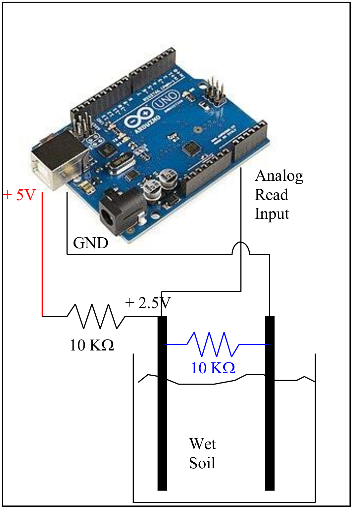
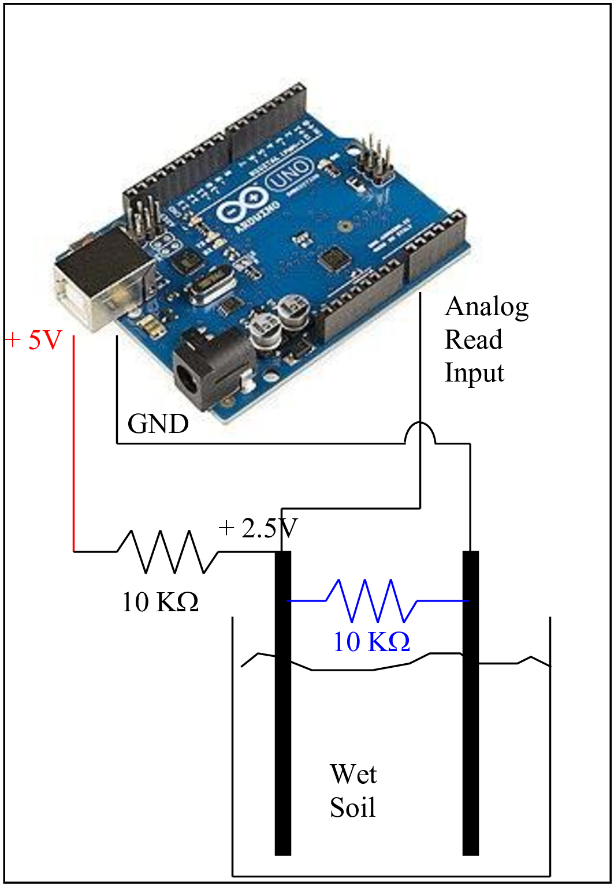
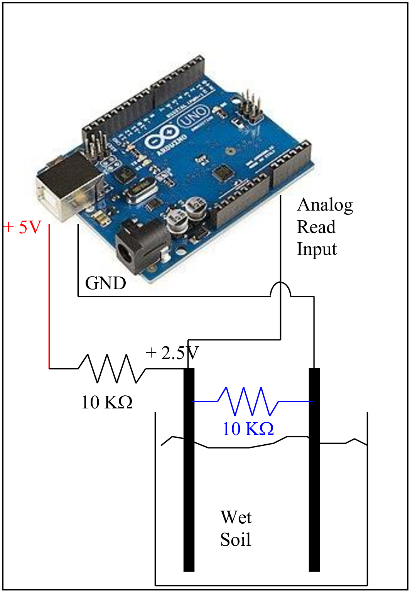

At the heart of the project is a soil moisture sensor. The soil moisture sensor consists of two electrodes. When the soil is dry, there is no or very little conduction of electrons through the soil. One electrode is connected to +5 volts through a 10 KOhm pull-up resistor. The other electrode is connected to ground. When there is no conduction through the dry soil, the current through the 10 Kohm resistor is zero and the voltage drop across the 10 Kohm resistor is zero. Therefore the voltage at the positive electrode is +5 volts. Now consider that the soil moisture sensor is in wet soil. Now there is conduction of electrons between the two electrodes. The wet soil acts like a resistor. The circuit with 10 KOhm resistor and soil moisture resistor acts like a voltage divider circuit. The voltage on the positive electrode drops.

The positive electrode is connected to the analog input on the arduino. At zero volt analog input, the arduino reads zero and at +5 volt analog input, the arduino reads 1023. For any voltage in between, the ardiono reads in between zero and 1023.
When the soil sample is dry, there is no soil current conduction and therefore the positve electrode remains close to 5 volts and high analog input, close to 1023 is expected from Arduino analog read.
When the soil sample is wet, there is soil current conduction and therefore the positve electrode drops to a voltage lower than 5 volts (approximately 2.5 volts) and low analog input, close to 512 is expected. We have set a value of analog read to be 800 or above to be the deciding point to turn ON the arduino output to the motor pump. A value less than 700 indicates a wet sample and arduino output to pump motor is low i.e. OFF.
An output (pin 13) is declared on Arduino and is connected to the motor driver, MX1616H. The motor driver takes an input from Arduino and depending on the input, switches on the power to the 5 volt motor pump. It gets a power input from the power supply. The power supply is a five volt two ampere voltage regulator powered by 220 volt AC mains
The code used in this project for both the website and Arduino is included below.